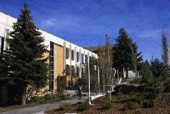
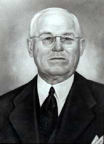

 |
Hyrum Manwaring |
| Director &
Asst. V.P. of Student Life, Ric Page...................................................MC
207, 356-2243 Associate Director, Randy Parkinson....................................................................MC 209, 356-2240 Program Coordinator, Doug Smith.......................................................................MC 373, 356-2280 Secretary, Ruby Whittaker.....................................................................................MC 207, 356-2242 Campus Scheduling...............................................................................................MC 207, 356-2248 Information Desk Supervisor, Deanna Myers.......................................................MC 252, 356-2249 |
|
|
|
 |
Hyrum Manwaring served Ricks College most of his life as dean of students and as a teacher. He arrived at Ricks College in 1914 with a vision that Ricks Academy would become a large junior college for Latter-Day Saint youth. When he arrived at Ricks in 1914, there were only two buildings, the Spori and the Gymnasium. In 1930, President John W. Hart asked Manwaring if he could preside over the school as acting president. Manwaring had no intention of accepting this call from the board, but when he finally accepted this new responsibility, he knew that it would be the biggest project of his life. For the first four years as president, he struggled to keep the college open during the depression years and the legislature refused to accept Ricks College as a gift to the state. However, at the time of his retirement in 1944 the fate of the United States and the future of Ricks College were beginning to look up. In honor of Hyrum Manwaring's dedication to the development of Ricks College, the student activity center was named after him. |